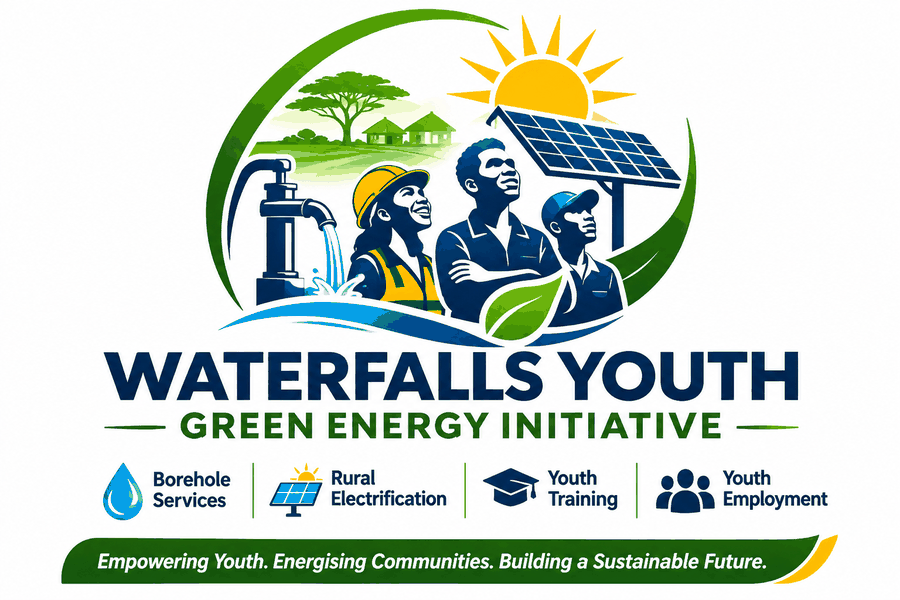

US$10,000 puts a 2-hectare, solar-irrigated farm into commercial production in Harare, run and staffed by young people. The farm is planned to cover its costs from sales in year one and pay for jobs from its own revenue.
Eight lines, US$10,000 in total. Most of it goes into assets that keep producing.
| Investment | US$ | Purpose |
|---|
Amounts are planning estimates pending supplier quotations. Solar pumping assumes a borehole already exists on the farm site; a new borehole would be quoted separately and would raise the total.
| Line | US$ |
|---|
Crop-by-crop figures and an adjustable simulator are on the production page.
Targets, not results yet. Paid jobs, trainees and out-growers are tracked separately.
US$10,000 as a grant, soft loan or equipment finance.
Agronomy and business support through the first two crop cycles.
Introductions to retailers, processors and institutional buyers.
Support to meet standards and, later, sell into SADC markets.
| Risk | Mitigation |
|---|---|
| Water or pump failure | Our own borehole and solar team maintains the system |
| Price falls | Agree prices before planting; spread sales across buyers |
| Crop loss | Three crops, staggered planting, recorded spray and feed plans |
| Cash shortfall | Working-capital reserve and monthly cash-flow tracking |
WYGEI provides borehole services, rural electrification and youth training, as stated by the company. Registration, trading record and projects delivered are being compiled.
The 2-hectare pilot farm, its milestones and its jobs. The farm is proposed and not yet operating, and no supply agreements have been signed.
Production, prices, revenue and margins. Estimate Funding amounts, pending supplier quotations.
Both documents use the same assumptions, funding allocation and employment targets as this website.
Questions or a meeting: Thomas Chikondo, +263 78 759 7638, tchikondo@wygei.co.zw
